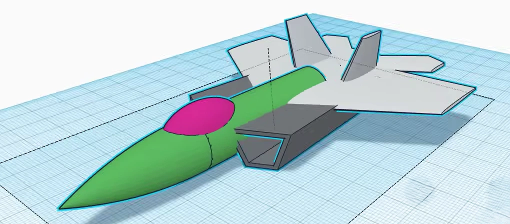
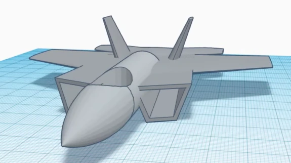
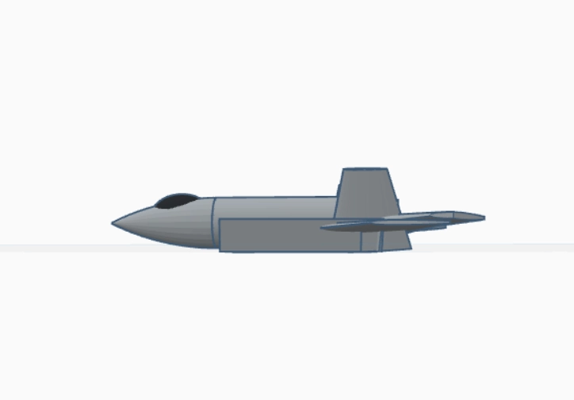
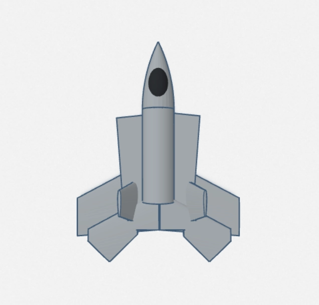

Project Overview
This project was an exercise in precision, patience, and spatial reasoning. The goal was to move beyond simple shapes and construct a complex, recognizable object—a modern jet aircraft. Using Autodesk TinkerCAD, a browser-based 3D modeling tool, I designed a detailed model from scratch, focusing on achieving realistic aerodynamic proportions and capturing the key features that define an aircraft's silhouette.
Inspiration and Goals
My fascination with aerospace engineering and design inspired this project. I wanted to challenge myself to translate a 2D concept—blueprints and photographs of aircraft—into a tangible 3D form. The primary goals were to practice geometric modeling, understand how complex shapes can be built from simple primitives, and pay meticulous attention to symmetry and scale, which are critical in both real-world engineering and 3D art.
The Design Process: From Primitives to Plane
The entire model was constructed using only primitive shapes like cubes, cylinders, wedges, and spheres. The process involved several key stages:
-
Blocking Out the Fuselage: The main body was formed by stretching and combining several cylindrical and box shapes to create the basic fuselage.

Phase 1: Blocking out the basic shape with primitive cylinders. -
Boolean Operations: The real detail work came from using boolean operations. I used "hole" shapes to carve out the cockpit, create the engine intakes, and shape the exhaust nozzles. This technique is fundamental to creating complex negative space in TinkerCAD.

Phase 2: Using boolean "hole" operations to carve the cockpit and intakes. - Crafting the Wings and Stabilizers: Achieving the correct aerodynamic profile for the wings was the most challenging part. It required carefully rotating, scaling, and aligning multiple wedge and roof shapes to create the tapered, swept-back look. The vertical and horizontal stabilizers were created similarly, ensuring perfect symmetry using the mirror tool.
Final Model Views


Challenges and Learning Outcomes
The main challenge was maintaining correct proportions and alignment without the advanced tools of professional software like Blender or Fusion 360. TinkerCAD's simplicity forces a deeper understanding of geometric manipulation. This project significantly improved my spatial reasoning skills and taught me the importance of breaking down a complex object into its simplest constituent parts. It was a valuable lesson in patience and precision, reinforcing that even with basic tools, attention to detail can yield a complex and satisfying result.
Skills Applied
- Spatial Reasoning: Visualizing 3D objects from 2D plans.
- Geometric & Boolean Modeling: Combining and subtracting primitive shapes to create complex, organic forms.
- Attention to Detail: Ensuring symmetry and proper scaling of components.
Credits
This project was inspired by the Tinkercad Airplane tutorial.